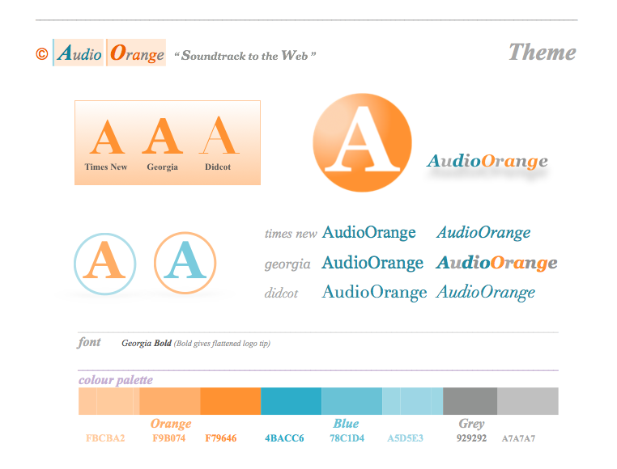

info
Design
Best design book i have read is Responsive Web Design (E.Marcotte), its concise and engaging to read. Certainly helped me understand the thoery behind RWD.
To re-sample, create logos & edit images, i use the GIMP (open-source image editor)
 its an exceptional example of what community can achieve... bye photoshop, hello
Wilber. (mascot)
its an exceptional example of what community can achieve... bye photoshop, hello
Wilber. (mascot)
For audio sound design, I have a home studio based around Apple Logic Pro X, Kontakt samlper, Komplete suite & Access Virus synth.
Theme & palette for AudioOrange.com
